2.1 Ivan 1842.–1875., Marija, Stana Nikolić 1840.-1870.?, Agneza Mitrović, Aga Sokačić 1849.-1922.
Julijana 1861.-1862., Živko 1863.-1895., Luka 1864.-1868., Ivan 1866.-1867., Marija 1868.-1868., Katarina 1870.-1873.
Ivan se oženio vrlo mlad, vjerojatno nije imao ni 18 godina. Prva žena Marija brzo mu je umrla. S drugom Stanom imao je šestero djece koja su sva osim Živka preminula mala. Stana je umrla nakon poroda Katarine te je Ivan oženio Agnezu koja nije dugo živjela poslije udaje. Četvrti brak Ivan je sklopio 1971. s Agom koja je bila udovica bez djece.
Ivan i svi njegovi stanovali su u obiteljskoj katnici izgrađenoj 1823. Po selu su se zvali Jerkovi, a kuća je imala broj 104. U vremenu od 1860.-1870. u njoj su boravila još četiri bračna para kojima su se rađala djeca skoro svake godine i od kojih je svakom paru preživjelo djetinjstvo najviše dvoje ili troje od sedmero, osmero rođenih. Parovi su Marko i Marija r. Martinović, Antun i Eva r. Miličić, Šima i Anka r. Ilijašević i Marijan i Marija r. Fastić. Marko je poznat po tome što je vozio četveropreg. Uprezala su se četiri konja čak i ako bi se išlo u grad i natrag potpuno praznim kolima. Osim bračnih parova u kući je boravilo nekoliko starijih. Ivan je umro u 33. godini života, a njegova udovica Aga ostala je poslije njega živjeti još 47 godina u najboljoj sobi Bile kuće. Ta je soba jedina u kući imala zidani strop, zvala se Soba s kubom. Aga nije htjela otići s pastorkom Živkom kad se on 1884. sa svojom obitelji odijelio i sagradio kuću pokraj Bile.
2.2 Živko 1863.-1895., Manda Babajić 1863.-1921.
Pavo 1882.-1944., Ivo 1884.-1969., Stana 1892.-1983.
Živko se kao i njegov otac Ivan oženio mlad. Kad mu je prvi sin bio dvije godine i rođen drugi odselio je iz zadružne kuće u svoju novu. To su isto učinili njegovi bratići Marko i Šima. Prva kuća do Bile prema Vinkovcima bila je Živkova pa Markova i Šimina. Tuna i njegovi iz Bile kuće valjda su umrli ili im se kćeri poudale tako da je u ogromnoj kući ostala samo Marijanova obitelj i baba Aga. Vjerojatno su prije diobe postojala velika neslaganja, a poslije su funkcionirali kao susjedi. Marjan je početkom 20. stoljeća bio načelnik Mikanovaca.
Živko je umro u 32. godini života tako da je Stana ostala sama s troje male djece. Orala je i radila, osim poslova domaćice, sve muške poslove.
2.3 Pavo 1882.-1944., Anka Korajac 1885.-1957.
Marija 1903.- 1986., Živko 1906.-1984., Paula 1909.-1997.
Pavo se oženio 1902. s Ankom iz Koritne. Par godina prije ženidbe bio je u ljubavnoj vezi s Marijom Fastić iz Mikanovaca. Prekinuli su i Marija se udala za njegovog brata Ivu. Anka je naslijedila dosta veliko bogatstvo od svojih iz Paorije: veliku kuću, puno zemlje i dukate. Nametnula se kao gazda kuće i u mnogim je stvarima bila ispred svog vremena. Školovala je obadvije kćeri što je bilo skupo i rijetko. Spominju se njezine izreke: Ako ne znaš što je dobro kupi što je skupo. Tko kupuje što ne treba prodavat će i što treba. Kod nje je stajao kućanski novac i ona ga je čuvala ispod jastuka do smrti i dijelila ostalim ukućanima kako je htjela. Slomila je nogu u kuku i ležala je zadnjih 11 godina života u krevetu. Novac je bio kod nje i kad je izdahnula. Dosta se zarađivalo prodajom stoke i njoj donosila zarada. Ona je razvrstavala nove i stare novčanice te se ljutila kad nove dođu za trošak. Potrošite više nego što dobijete.- govorila je tada. Neki su smatrali da je škrta, a neki da je štedljiva i razborita. O njoj na tu temu postoji anegdota koju sam ja oblikovao u pričicu. Moja žena Manda ju je preoblikovanu u monolog izvela učenicima moga unuka Živka u vezi nastave dijalektalnog šokačkog govora. Naslov je VILE DOBRICE, a počinje pjevanjem pokladovca:
Šokica sam, šokica sam, divan me izdaje.
Po divanu, po divanu dika me poznaje.
Ja sam Živkova baka. Zovem se baka Manda. Živkov dida se zove dida Pavo. Ja ću vam sad ispripovidat pripovitku o dida Pavinom pradidi koji se isto zvo Pavo i njegovoj ženi Anki. Taj Pavo i Anka su se jako volili, a kad su se oženili onda su se dan na dan svađali.
Pavo ni šparo. Dilio je svima šakom i kapom. Anka je bila škrta ko čifut. Po njenom se u jednom danu smilo potrošit najviše jednu cintelicu i to ujutru za naložit šporet, a onda se fenjer, svića i sve drugo palilo od vatre iz šporeta.
Njen se čojek Pavo ni držo tog pravila, već je svoju lulu uvik palio cintelicama, pa i kad sedi kraj šporeta.
– Samo krešeš – prigovori mu ona obavezno i onda među njima grmi i siva.
Jedanput je ispalo malo drukčje. Bilo je Ilinje, godine iljadu devetsto šeste. U Mikanovci je to dan klečanja u crkvi. Prošlo je devet sati ujutru i Anka u kujni misi masnicu orasima i makim. Razvaljalom razvaljiva tisto. Pavo sedi na ganku, puši lulu, frče brke i čuva malog sina Živka koji spava u kolivki. Odjedanput se čuje neko na kapiji. Čuko laje i trči prema drumu. Pavo ide vidit ko je. Na vratima je stojala ciganka s torbom priko ramena.
– Kume, imaš mnogo lep brk – rekla je odma. Na Pavinom licu je zablisto smišak.
Anka je provirila prema kapiji i čim je čula šta je ciganka kazala njenom čojeku vratila se u kujnu. Za čas je ciganka došla k njoj i počela svoju jadikovku:
– Ja sam jadna, bolesna, sirota. Imam puno deca. Pet komada deca. Deca gladna. Nama ništ za jest. Da mi daš nešt. Bog će ti platit.
Anka se namrgodila. Tila je kast ciganki da laže i da treba zaradit kruv, a ne prosit. Zaustila je:
– Ne dam ti ništa – na što se istog časa oglasio Pavo:
– Daj joj. Daj joj kobasicu..
Anka bi najrađe zviznila razvaljalom po tikvi i čojeka i njegovu kumu ciganku. Ipak se suzdržala. Bisno je ošla u pušnicu.
– Na. Evo ti kobasica pa se nadojidaj. Ja ću jest žgance i gra – kazala je kad se vrnila, na što joj je ciganka odgovorila:
– Kuma, ne smeš da se ljutiš. Budeš žalila šta si meni dala kobasicu, noćas će da dođu vile u tvoj soba. Će da uđu kroz pendžer dok spavaš i će da odnesu tebe i tvoj deca.
Anku su jako zabrinile cigankine riči. Cilo potljepodne zamišljala je kako se vile prikradaje i nju zamataje u bilu ponjavu, a malog Živka glavna vila uzima iz kolivke. On plače ko izbezumit.
Anka je odlučila ne spavat kad bude legla u krevet. Čekaće vile. Pripremiće si metlu i razvaljalo. Mavat će metlom i vile će pobeć, a ako ne butu tile, onda će ji razvaljalom.
Vrime je sparno. Nema vila. Potlje po noći Anku je privario san.
Počela je oluja. Jako je puvalo, grmilo i sivalo. Vetar je razbio staklo na pendžeru od čega se Anka probudila. Skočila je iz kreveta i proderala se:
– Došle vile. Joj, šta ću sad. Vile Dobrice! Vile Dobrice, ostavite mene i moje dite. Eno vam Pavo. Nosite Pavu. On u vas ne veruje.
Mislim da Anka nije vjerovala u vile i čarobnjake već da su i to klevete onih koji je nisu voljeli, a tih je bilo. Išla je u crkvu ali je uvijek puno kasnila. Poslije mise je po preuveličanim tračevima šetala s drugama od podne do noći. Navodno je njezin muž išao kod susjede Polke te ju je ona napala. Uvrijedila ju je rekavši joj da se kurva s njezinim čojekom. Valjda su se i počupale pa je Anka provela 7 dana u zatvoru. Drugi su opet pričali priče da je ona bila u ljubavnoj vezi s Pavinim bratom Ivom i da je imala odnose s Vinkom Damića te da moj djed Živko nije Pavin sin.
Pavo je proveo 4 godine u ratu. Od 1914.-1918. bio je na talijanskom frontu. Iako svi govore da je stalno pričao o doživljajima na bojištu, ja ne znam ni jednu njegovu priču. Dok je Pavo ratovao Anka je prodala svoje nasljeđe iz Koritne: roditeljsku kuću i zemlju. Novac je dala za ratni zajam kako bi rat završio što ranije i Pavo došao kući. Država je izgubila rat i novac je propao. Anka je bila krštena kuma vanbračnoj kćeri susjede Eve koja je stanovala pet kuća prije naše i bila siromašna. Vjerojatno nitko nije htio biti kum kopiletu čime je pokazala za to vrijeme neuobičajenu čovječnost. Evi je poslije posuđivala svoje dukate da s njima paradira, a nije ih htjela dati snahi Poli što svakako nije u redu.
Pavo je proveo 4 godine u ratu. Od 1914.-1918. bio je na talijanskom frontu. Iako svi govore da je stalno pričao o doživljajima na bojištu, ja ne znam ni jednu njegovu priPavina i Ankina djeca dolazila su se igrati u dvorište Bile kuće s vršnjacima Marijanovih unuka, a ljeti je još dolazio k njima iz Zagreba Šima Čajkovac, kasnije svjetski poznati liječnik, dermatolog i sveučilišni profesor inače sin političara i književnika Sigismunda (Sige) rodom iz Prkovaca. Secirali su žabe i pravili svakakve nepodobštine te dolazili u sukob s bab Agom čija je ljubimica bila Pavina Marija. Ona je za babu bila Seka, a ostali su bili vragovi. Seka je jedina smjela jesti Agine hinberne (maline), a ostala djeca su dobila šibom ako bi pokušala ubrati koju slasticu. Dok je bila cijeli dan odsutna na nekom proštenju za osvetu su joj pod vodstvom Šime obojali kubu (strop) sobe plavom bojom i nacrtali zvijezde i mjesec. Došla je kući u neko doba noći, a kad se ujutro probudila mislila je da je u raju.
Pavo je za vrijeme 2. svjetskog rata kao starac orao zemlju i radio sve ratarske poslove. Godine 1944. išla je njemačka kolona za Bosnu. Jednim kolima iz te kolone slomio se točak. Pavo se vraćao s oranja i Nijemci su mu istovarili plug iz kola te ga natjerali voziti vojni teret u Bosnu. Putovanje je trajalo pet dana, a kako je bilo hladno i kiša on se razbolio. Dobio je upalu pluća i umro.
2.4 Živko 1906.-1984., Pola Abjanić 1906.-1935., Anica Jerković 1916.-1993.
Živko 1926.-1996., Antun 1929.-2019.
Pola Abjanić Đurkova bila je djevojka jednog Andre i ne znam kako se spetljala s tada devetnaestogodišnjim mojim djedom Živkom. Ostala je trudna i Živkova mama Anka bila je protiv ženidbe, otac Pavo nije imao ništa protiv. Polu su njezini istjerali iz kuće kad su saznali za trudnoću i rodila je kod neke stare tetke u štali 14. studenog 1926. moga oca Živka koji je kršten kao kopile s prezimenom Abjanić. Baka Anka ga nije htjela prihvatiti jer je sumnjala da nema Petričevića krvi te je nakon prestanka dojenja Pola došla Jerkovima, a mali Živko ostao kod Đurkovi. Njega su Đurkovi htjeli i voljeli, svojoj kćeri nisu mogli oprostiti što ih je osramotila. Kod njih je Živko boravio do polaska u školu. Tada mu je prezime promijenjeno u Petričević. Pola je rodila 1929. sina Tunu. Jako je zamjerala svekrvi Anki zbog dukata koje je nosila kuma Eva. Umrla je 1935., a njezin muž Živko je kao udovac ubrzo oženio djevojku Anicu Jerković koja je od njega bila mlađa 10 godina, a isto toliko starija od sina Živka koji mu možda nije sin. Situacija je bila komplicirana, ali se uz probleme održavala.
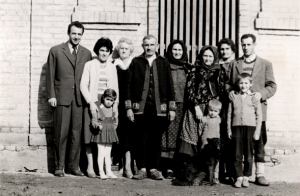
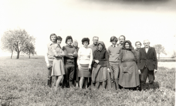
Prodani su sporni dukati i za njih kupljene ovce koje je mali Živko čuvao čim je završio četvrti razred. Silno je želio ići u gimnaziju, ali mu nisu dali iako je bio daleko najbolji đak. Bilo mu je krivo što ga od naših nitko nikada nije pohvalio ili mu rekao lijepu riječ bez obzira što je brinuo za stado ovaca bolje od bilo kojeg odraslog čovjeka, što je radio teške poslove kao što su zabijanje kolaca prilikom premještanja letava tako da stane na letvu i udara maljem i što se od prodaje jaganjaca koje je othranio dobivalo puno novaca.
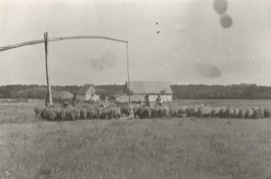
Od tih su novaca Živko i Anica sagradili štagalj dužine 40 m, širine 8 m na kat što je bilo remek djelo kakvog nije bilo u okolici. Prije gradnje kupili su kuću pokraj naše od unuka onoga Marka što je vozio četveropreg. Oboje su jako puno radili. Orali su s dva pluga i dva para konja, u šumi rušili hrastove za grede štaglja i tovarili ih na kola ili saone za što je trebala vještina i snaga. Za vrijeme rata Živko nije bio ni u jednoj vojsci. Uglavnom se skrivao kad su bile racije u tajnom bunkeru koji se nalazio pokraj podruma. Prilikom oslobađanja Đakova vodile su se teške borbe i on je morao kolima prevoziti ranjene partizane od Jošave do Đurđanaca. Dovezao je jednu turu i natjerali su ga po drugu. Paljba je bila ubitačna i on je na izlasku iz Đurđanaca ostavio konje i kola i došao pješke kući. Rastanak s vjernim kobilama Olgom i Drinom bio mu je bolan. Neki naši susjedi vidjeli su ih poslije kad su vukle topove i htjele skrenuti kući.
Kad su bile obaveze i metenje tavana tajni bunker služio je za skrivanje žita, suhog mesa i masti te kod nas nije bilo gladi. Pokošeno žito vršile su zadružne mašine i odmah se oduzimala pšenica te je Živko organizirao vršaj konjima u novoj staji što je bilo strogo zabranjeno. Za slučaj kontrole ulazna vrata od dvorišta bila su čvrsto zatvorena, a Živka bi netko išao zvati u vrt te je on izlazio iz štaglja na stražnja vrata. Jedan se kontrolor zagledao u štagalj i diveći se njegovoj veličini rekao da bi se u njemu moglo vršiti.
Poslije je Živko morao biti u dobrovoljnoj socijalističko radnoj zadruzi. Mrzio ju je iz dna duše. U štagalj su smjestili zadružne konje, on je bio konjušar. Šef mu je bio Franja Verkin koji nikada nije imao konje niti je o njima i radu s njima išta znao. Živkovi mladi, izuzetno dobri konji vozili su u fijakeru šefa zadruge Jozu Martinovića koji je ostavio ženu i četvero djece i došao živjeti kod žene njegovog bratića, sina strica Ive, koji je poginuo u ratu.
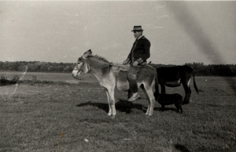
Dida Živko na magarcu kod stanaŽivko je do kraja života jahao svaki dan na magarcu na stan i posvetio se uzgoju svinja i ovaca. Bio je nenadmašan u patentiranju pomagala u radu i opremanju staja originalnim pregradama, vješalicama, valovima, hranilicama, svjetiljkama, grijalicama tek oprašene prasadi pri cičoj zimi. Iako je na stanu imao sobu s krevetom i štednjakom jako je rijetko noćivao na Utvaju.
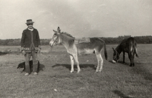
Dida Živko s magarcem kod stanaUdaljenost do kuće bila je tri i pol kilometra i bez obzira na kišu, poplavu, zaleđenu vodu poplavljenog pašnjaka, duboki snijeg ili maglu on je jahao na magarcu i u neko doba noći. Obično je pokraj njega trčao pas. Dida je na magarcu bio atrakcija za djecu skoro cijelog sela. Kad smo ’71. nabavili traktor onda su na stan došli konji na pašu. Dida ih je putao, pojio, puštao ujutro na utvaj pasti travu i navečer zatvarao. Žudio je za četveropregom kakav je imao Marko u Biloj kući prije 100 godina. Uspio je odgojiti tri kobile koje su se ždrijebile svake godine i ždrijepca.
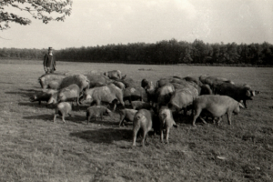
Dida 1974.Obično je imao još tri godišnjaka tako je posjedovao ergelu od 10 grla. Nikada nije uspio upreći 4 konja i voziti se u četveropregu. Svaki dan je radio do svoje 78. godine života. Tada se razbolio i za dva mjeseca umro. Ništa ga nije boljelo. Ugasio se.
2.5 Živko 1926.-1996., Ana Gregurić 1930.-1993.
Pavao 1952., Ivan 1958.
Moj otac Živko postao je čoban s 11 godina. Zavolio je rad s ovcama iako je želio pohađati gimnaziju i studirati. Nije sudjelovao u 2. svjetskom ratu, ali je već u ljeto 1945. morao na odsluženje vojnog roka koji je trajao više od tri godine. Bio je u vojsci bolničar i govorio je da mu se sviđalo davati injekcije, sanirati ozljede i liječiti bolesne. Imao je osmogodišnje iskustvo u zdravstvenoj skrbi s ovcama, a stečeno znanje vojnog bolničara primjenjivao je poslije u vlastitom stočarstvu. Nakon povratka iz vojske poslali su ga kao člana zadruge na kurs za knjigovođu. Ne znam tko ga je predložio, a mislim da je izabran zbog intelektualnih sposobnosti. Bio je vrstan matematičar i organizator, posjedovao je moralne kvalitete. Istina, poštenje, pomaganje drugima i želja da u poslu bude najbolji bile su mu svetinje. Bez obzira na dosta ološa u vladajućim garniturama nije odustajao od svojih principa te se nakon raspada zadruga vratio na svoju zemlju. Svi njegovi kolege, knjigovođe postali su šefovi u novim zadrugama. Josip Vojvodić i on bili su najbolji na kursu. Vojvodić je postao generalni direktor PIK-a Vinkovci i stvarni prvi čovjek Općine, a moj otac seljak u socijalističkom sistemu koji je svim silama gušio individualne poljoprivrednike.
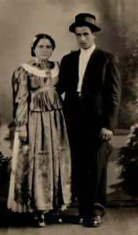
Dada i mama 1949.On i moja majka Ana Gregurić iz Novih Mikanovaca vjenčali su se 1949. Mene, prvog sina dobili su 1952. kada počinju život u domaćinstvu s mojim djedom Živkom, bakom Anicom i djedovim sestrama Marijom Gagom i Paulom Ulom koje su bile neudane. Gaga je te ’52 umirovljena. Imala je jako malu mirovinu. Radila je u mikanovačkom mlinu kao šef računovodstva. Umrla je 1986. Ula je bila učiteljica u Štitaru i Mikanovcima do 1965. Njezina je mirovina bila solidna, a umrla je 1997.
Moja majka Ana se razboljela kad je bila trudna sa mnom. Imala je reumu i upalu zglobova i to ju je mučilo do smrti. Mene je rodila u osmom mjesecu trudnoće, a kako je bila bolesna nije imala mlijeka te me rano prestala dojiti i brigu o meni preuzela je Gaga kod koje sam spavao u sobi do petog razreda.
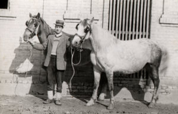
Dada Živko s konjimaOtac Živko je obrađivao je 15 jutara naše zemlji i još je uzimao arendu u Foku koji je bio dio Utvaja istočno uz prugu. Svake godine vršila se licitacija livada i oranica i on je kupovao po sistemu tko plati više. Postojali su ljudi bliski vlasti koji su nabijali cijenu i događalo se da kada je on odustao od kupnje provokatori nisu htjeli kupiti po cijeni koju su ponudili. Nije im bilo neugodno. Osim sjetve kukuruza i pšenice on i naši sadili su svake godine dva jutra kupusa po strnjaku, sijali sirak, repu, djetelinu, bundeve i grah. Iako je djed bio na stanu sa svinjama i ovcama, otac je puno radio oko stoke. Pripremao je smjesu što je značilo krunjenje kukuruza i mljevenje čekičarom te tovarenje u kola i dovoženje na Utvaj gdje je trebalo pomagati djedu u čišćenju, popravcima, liječenju, preventivi liječenja, kastraciji prasadi i jaganjaca. Svake godine se nešto zidalo i prepravljalo. Veliki posao bio je pripremanje sijena za ovce koje su kad padne snijeg dolazile kući i janjile se. Otac je 1960. godine počeo gradnju današnje naše kuće u kojoj živimo brat i ja. Nekoliko godina nabavljao je materijal (80 tisuća nove cigle, crijep, građu, daske, letve). Kuća je prve godine stavljena pod krov, a za dvije godine ožbukana i useljena. U 4 sobe postavljen je hrastov parket, a u ostale hrastov pod. Ugrađene su cijevi za vodovod. Od 1968. do 1970. sva zarada išla je za izgradnju stričeve kuće. U to vrijeme otac Živko se liječio od alkoholizma. Skoro je umro. Alkoholizam je teška bolest i to cijele obitelji. Traume iz djetinjstva su ga morile i poticale na pijenje. Sto put je ponavljao:
– Rođen sam kao Isus u štali. Prezime Abjanić mijenjali su mi kad sam polazio u prvi razred. Učitelj mi je uzeo prst za otisak i umočio u tintu. Gaga Tuni i njegovoj ženi Mariji kaže djeco. Meni nikad nitko nije rekao dijete ni kad sam imao 7 godina.
Otac nije imao podršku ukućana za ljetovanje na moru što je želio. Išao je svake godine na velesajme u Zagreb i Novi Sad. Mene je od malih nogu uvažavao. Kasnije je prihvaćao moje ideje u vezi izvođenja i organizacije poslova ili je obrazložio zbog čega je bolje raditi po njegovom. Dva puta je na sajmu stao na moju stranu prilikom prodaje konja, odnosno 18 velikih nazimaka kad je dida Živko bio protiv moga sklopljenog dogovora s kupcima. Za njega je riječ bila svetinja. Nikada mi nije rekao da moram nešto uraditi, već bi li mogao i mislim da nikada nisam rekao da ne mogu. Nastojao je da stignem na nogomet ili zabavu.
Mama se do smrti liječila. Dosta je radila iako ju je boljelo, ponekad jako. Umrla je u 63. godini života 3. ožujka 1993.
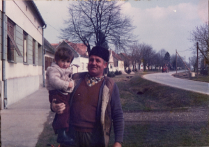
Dada i Marko 1981.Otac je ostao živjeti s bratom. Pred kraj života želio je vidjeti što piše u crkvenoj knjizi rođenih za ime njegovog oca. Moja žena je knjigu bezuspješno tražila kod župnika. Knjiga je navodno odnesena u biskupiju u Đakovu tako da se ocu nije ispunila želja. Bolje da nije vidio što piše.
Nekoliko dana prije smrti 24 srpnja 1996. išao je traktorom posjetiti prijatelja iz djetinjstva Tunu Paradžika koji je prije rata živio u Vukovaru, prošao pakao logora i nalazio se u izbjegličkom naselju Blace u Rokovcima.
Dadi je neposredno prije oluje ječam vršio čika Fila Matanić. To ga je dotuklo.
2.6 Pavao 1952., Manda 1956.
Marko 1978.,Vinko 1979., Antun 1982., Marija 1990., Pavao 1994.
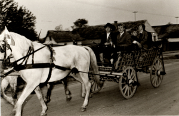
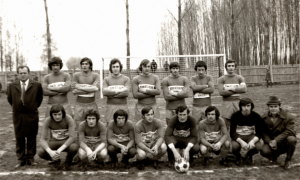
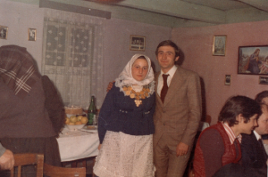
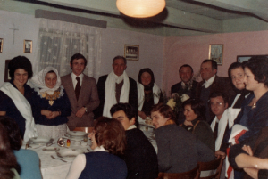
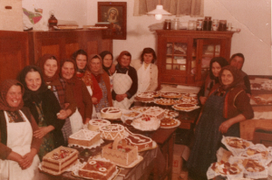
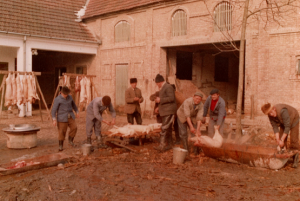
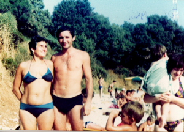
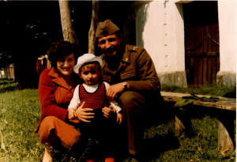
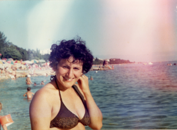
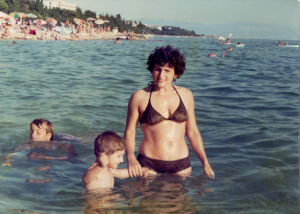
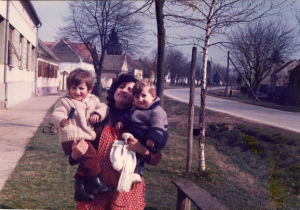
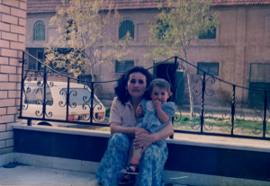
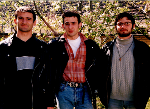
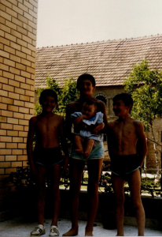
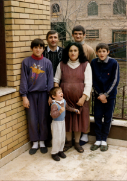
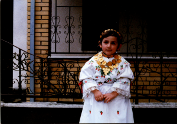
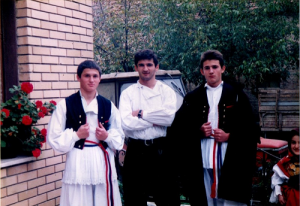
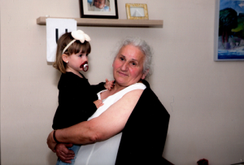
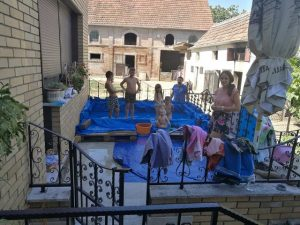
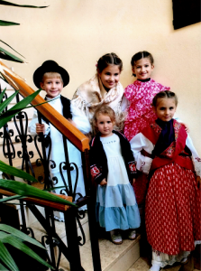
2.7.1.Marko 1978., Marija Dolanjski 1977.
Martin 2013., Barbara 2017.
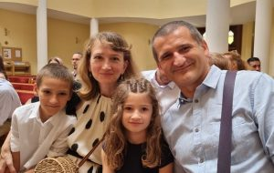
2.7.2. Vinko
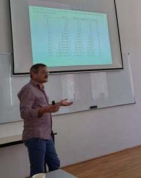
2.7.3.Antun 1982., Marina Veraja 1987.
Petar Živko 2012., Lucija 2015., Ivan Roko 2019.
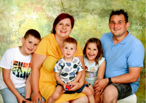
2.7.4.Marija Tovilo r. Petričević 1990., Robert Tovilo 1986.
Sara 2015., Karla 2020.
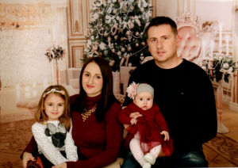
2.7.5. Pavao 1994., Kristina, 1999.
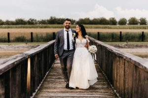